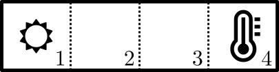

üìñ Documents (GitHub)
©️ License CC BY 4.0
| üêç | Code | üîç | Worked Example |
| üìà | Graph | üß© | Exercise |
| üè∑Ô∏è | Definition | üíª | Numerical Method |
| üíé | Theorem | üßÆ | Analytical Method |
| üìù | Remark | ü߆ | Theory |
| ‚ÑπÔ∏è | Information | üóùÔ∏è | Hint |
| ‚ö†Ô∏è | Warning | üîì | Solution |
Their structure is
\[ \dot{x} = f(x, u) \]
where \(x \in \mathbb{R}^n\) and \(u \in \mathbb{R}^m\), that is
\[ f: \mathbb{R}^n \times \mathbb{R}^m \to \mathbb{R}^n. \]
The vector-valued \(u\) is the system input.
This quantity may depend on the time \(t\)
\[ u: t \in \mathbb{R} \mapsto u(t) \in \mathbb{R}^m, \]
(actually it may also depend on some state, but we will adress this later).
A solution of
\[\dot{x} = f(x, u), \; x(t_0) = x_0\]
is merely a solution of
\[\dot{x} = h(t,x), \; x(t_0) = x_0,\]
where
\[h(t, x) := f(x, u(t)).\]
We may complement the system dynamics with an equation
\[ y = g(x, u) \in \mathbb{R}^p \]
The vector \(y\) refers to the systems output, usually the quantities that we can effectively measure in a system (the state \(x\) itself may be unknown).
Input \(u \in \mathbb{R}^m\), state \(x \in \mathbb{R}^n\), output \(y \in \mathbb{R}^p\).
\[ \begin{array}{c} \dot{x} &=& A x + B u \\ y &=& C x + D u \end{array} \]
\(A \in \mathbb{R}^{n \times n}\), \(B \in \mathbb{R}^{n\times m}\), \(C \in \mathbb{R}^{p \times n}\), \(D \in \mathbb{R}^{p \times m}\).
\[ \left[ \begin{array}{c|c} A & B \\ \hline C & D \end{array} \right] \]
When \(u=0\),
\[ \dot{x} = A x =: f(x) \; \Rightarrow \; \frac{\partial f}{\partial x}(x) = A \]
The vector field \(f\) is continuously differentiable
\(\Rightarrow\) The system is well-posed.
When \(u=0\), since
\[ \dot{x} = A x =: f(x) \]
\[ f(0) = A 0 = 0 \]
\(\Rightarrow\) the origin \(x=0\) is always an equilibrium.
(the only one in the state space if \(A\) is invertible).
Assume that:
\(\dot{x}_1 = A x_1 + B u_1\), \(x_1(0) = x_{10}\),
\(\dot{x}_2 = A x_2 + B u_2\), \(x_2(0) = x_{20}\),
Set
\(u_3 = \lambda u_1 + \mu u_2\) and
\(x_{30} = \lambda x_{10} + \mu x_{20}\).
for some \(\lambda\) and \(\mu\).
Then, if
\[x_3 = \lambda x_1 + \mu x_2,\]
we have
\[ \dot{x}_3 = A x_3 + B u_3, \; x_3(0) = x_{30}. \]
The solution of
\[ \dot{x} = A x + Bu, \; x(0) = x_0 \]
is the sum \(x(t)=x_1(t)+x_2(t)\) where
\(x_1(t)\) is the solution to the internal dynamics and
\(x_2(t)\) is the solution to the external dynamics.
The internal dynamics is controlled by the initial value \(x_0\) only (there is no input, \(u=0\)).
\[ \dot{x}_1 = A x_1, \; x_1(0) = x_0, \]
The external dynamics is controlled by the input \(u(t)\) only (the system is initially at rest, \(x_0=0\)).
\[ \dot{x}_2 = A x_2 + Bu, \; x_2(0) = 0. \]
These systems are actually linear and time-invariant (hence LTI) systems. Time-invariant means that when \(x(t)\) is a solution of
\[ \dot{x} = A x + Bu, \; x(0) = x_0, \]
then \(x(t- t_0)\) is a solution of
\[ \dot{x} = A x + Bu(t-t_0), \; x(t_0) = x_0. \]

Four cells numbered 1 to 4 are arranged in a row.
The first cell has a heat source, the last one a temperature sensor.
The heat sink/source is increasing the temperature of its cell of \(u\) degrees by second.
If the temperature of a cell is \(T\) and the one of a neighbor is \(T_n\), \(T\) increases of \(T_n - T\) by second.
Given the geometric layout:
\(d T_1/dt = u + (T_2 - T_1)\)
\(d T_2/dt = (T_1 - T_2) + (T_3 - T_2)\)
\(d T_3/dt = (T_2 - T_3) + (T_4 - T_3)\)
\(d T_4/dt = (T_3 - T_4)\)
\(y = T_4\)
Set \(x = (T_1, T_2, T_3, T_4)\).
The model is linear and its standard matrices are:
\[ A = \left[ \begin{array}{rrrr} -1 & 1 & 0 & 0 \\ 1 & -2 & 1 & 0 \\ 0 & 1 & -2 & 1 \\ 0 & 0 & 1 & -1 \end{array} \right] \]
\[ B = \left[ \begin{array}{c} 1 \\ 0 \\ 0 \\ 0 \end{array} \right], \; C = \left[ \begin{array}{cccc} 0 & 0 & 0 & 1 \end{array} \right], \; D = [0] \]
Consider the nonlinear system
\[ \begin{array}{ccc} \dot{x} &=& f(x, u) \\ y &=& g(x, u) \end{array} \]
Assume that \(x_e\) is an equilibrium when \(u=u_e\) (cst):
\[ f(x_e, u_e) = 0 \]
and let
\[ y_e := g(x_e, u_e). \]
Define the error variables
\(\Delta x := x - x_e\),
\(\Delta u := u - u_e\) and
\(\Delta y := y - y_e\).
As long as the error variables stay small
\[ f(x, u) \simeq \overbrace{f(x_e, u_e)}^0 + \frac{\partial f}{\partial x}(x_e, u_e) \Delta x + \frac{\partial f}{\partial u}(x_e, u_e) \Delta u \]
\[ g(x, u) \simeq \overbrace{g(x_e, u_e)}^{y_e} + \frac{\partial g}{\partial x}(x_e, u_e) \Delta x + \frac{\partial g}{\partial u}(x_e, u_e) \Delta u \]
Hence, the error variables satisfy approximately
\[ \begin{array}{c} d(\Delta x)/dt &=& A \Delta x + B \Delta u \\ \Delta y &=& C \Delta x + D \Delta u \end{array} \]
with
\[ \left[ \begin{array}{c|c} A & B \\ \hline C & D \end{array} \right] = \left[ \begin{array}{c|c} \frac{\partial f}{\partial x} & \frac{\partial f}{\partial u} \\ \hline \frac{\partial g}{\partial x} & \frac{\partial g}{\partial u} \end{array} \right](x_e, u_e) \]
The system
\[ \begin{array}{cc} \dot{x} &=& -2x + y^3 \\ \dot{y} &=& -2y + x^3 \end{array} \]
has an equilibrium at \((0, 0)\).
The corresponding error variables satisfy \(\Delta x = x\) and \(\Delta y = y\), thus \[ \frac{d \Delta x}{dt} =\dot{x} = -2 x + y^3 = -2 \Delta x + (\Delta y)^3 \approx -2 \Delta x \] \[ \frac{d \Delta y}{dt} =\dot{y} = -2 y + x^3 = -2 \Delta y + (\Delta x)^3 \approx -2 \Delta y \]
\[ \begin{array}{cc} \dot{x} &=& -2x + y^3 \\ \dot{y} &=& -2y + x^3 \end{array} \]
\(\to\)
\[ \begin{array}{cc} \dot{x} &\approx& -2x \\ \dot{y} &\approx& -2y \end{array} \]
Consider
\[ \dot{x} = -x^2 + u, \; y = x u \]
If we set \(u_e = 1\), the system has an equilibrium at \(x_e = 1\) (and also \(x_e = -1\) but we focus on the former) and the corresponding \(y\) is \(y_e = x_e u_e = 1\).
Around this configuration \((x_e, u_e) = (1, 1)\), we have
\[ \frac{\partial (-x^2+u)}{\partial x} = -2x_e = -2, \; \frac{\partial (-x^2+u)}{\partial u} = 1, \]
and
\[ \frac{\partial x u }{\partial x} = u_e = 1, \; \frac{\partial x u}{\partial u} = x_e = 1. \]
Thus, the approximate, linearized dynamics around this equilibrium is
\[ \begin{array}{rcr} d(x-1)/dt &=& -2 (x - 1) + (u - 1) \\ y -1 &=& (x - 1) + (u - 1) \end{array} \]
The equilibrium \(0\) is locally asymptotically stable for
\[ \frac{d \Delta x}{dt} = A \Delta x \]
where \(A = \partial f (x_e, u_e) / \partial x.\)
\(\Rightarrow\)
The equilibrium \(x_e\) is locally asymptotically stable for
\[ \dot{x} = f(x, u_e). \]
The converse is not true : the nonlinear system may be asymptotically stable but not its linearized approximation (e.g. consider \(\dot{x} = -x^3\)).
If we replace local asymptotic stability with local exponential stability, the requirement that locally
\[ \|x(t) - x_e\| \leq A e^{-\sigma t} \|x(0) - x_e\| \]
for some \(A >0\) and \(\sigma > 0\), then it works.
A pendulum submitted to a torque \(c\) is governed by
\[ m \ell^2 \ddot{\theta} + b \dot{\theta} + m g \ell \sin \theta = c. \]
We assume that only the angle \(\theta\) is measured.
Let \(x=(\theta, \dot{\theta})\), \(u=c\) and \(y=\theta\).
What are the function \(f\) and \(g\) that determine the nonlinear dynamics of the pendulum?
Show that for any angle \(\theta_e\) there is a constant value \(c_e\) of the torque such that \(x_e = (\theta_e, 0)\) is an equilibrium.
Compute the linearized dynamics of the pendulum around this equilibrium and put it in the standard form (compute \(A\), \(B\), \(C\) and \(D\)).
The 2nd-order differential equation
\[ m \ell^2 \ddot{\theta} + b \dot{\theta} + m g \ell \sin \theta = c. \]
is equivalent to the first-order differential equation
\[ \frac{d}{dt} \left[ \begin{array}{c} \theta \\ \omega \end{array} \right] = \left[ \begin{array}{c} \omega \\ -(b /m\ell^2)\omega - (g/\ell) \sin \theta + c / m\ell^2 \end{array} \right] \]
Hence, with \(x=(\theta, \dot{\theta})\), \(u=c\) and \(y=\theta\), we have
\[ \begin{array}{ccc} \dot{x} &=& f(x, u) \\ y &=& g(x, u) \end{array} \]
with
\[ \begin{array}{lll} f((\theta, \omega), c) &=& \left(\omega, -(b /m\ell^2)\omega - (g/\ell) \sin \theta + c / m\ell^2 \right) \\ g((\theta, \omega), c) &=& \theta. \end{array} \]
Let \(\theta_e\) in \(\mathbb{R}\). If \(c=c_e\), the state \(x_e:=(\theta_e, 0)\) is an equilibrium if and only if \(f((\theta_e, 0), c_e)=0\), that is
\[ \left[ \begin{array}{c} 0 \\ 0 - (g/\ell) \sin \theta_e + c_e / m\ell^2 \end{array} \right] = \left[ \begin{array}{c} 0 \\ 0 \end{array} \right] \]
which holds if and only if
\[ c_e = m g \ell \sin \theta_e. \]
We have
\[ A = \frac{\partial f}{\partial x} (x_e, c_e) = \left[ \begin{array}{rr} 0 & 1 \\ - (g/\ell) \cos \theta_e & -(b /m\ell^2) \\ \end{array} \right] \]
\[ B = \frac{\partial f}{\partial u} (x_e, u_e) = \left[ \begin{array}{c} 0 \\ 1/m\ell^2 \end{array} \right] \]
\[ C = \frac{\partial g}{\partial x_e} (x_e, u_e) = \left[ \begin{array}{cc} 1 \\ 0 \end{array} \right], \; D = \frac{\partial g}{\partial u_e} (x_e, u_e) = 0 \]
Thus,
\[ \begin{split} \frac{d}{dt}\Delta \theta & \approx \Delta \omega \\ \frac{d}{dt}\Delta \omega & \approx -(g/\ell) \cos (\theta_e) \Delta \theta -(b/m\ell^2) \Delta \omega + \Delta c /m \ell^2 \\ \end{split} \]
and obviously, as far as the output goes,
\[ \Delta \theta \approx \Delta \theta. \]